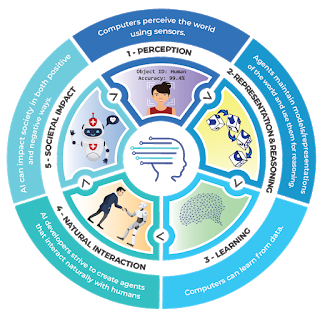

IDEAS PRINCIPALES DE LA IA
Las cinco ideas principales que todo el mundo debería conocer acerca de la IA, tal como puede verse en la siguiente figura
- Percepción los ordenadores perciben el mundo utilizando sensores
- Representación y razonamiento Los agentes mantienen modelos o representaciones del mundo y las usan para razonar
- Aprendizaje Los ordenadores pueden aprender a partir de datos
- Interacción natural Hacer que los agentes interactúen con los humanos de manera fluida es un desafío enorme para los desarrolladores de IA
- Impacto social la IA puede tener un impacto tanto positivo como negativo sobre la sociedad
